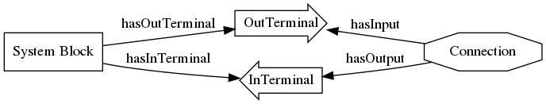

IMF Ontology
Table of Contents
- 1. Preliminaries
- 2. Namespace and Identifiers
- 3. Published files
- 4. IMF Ontology
- 5. IMF Top Ontology
- 6. TODO IMF Metamodel Ontology
- 7. IMF Aspects Ontology
- 8. Summary of IMF ontologies
- 9. TODO Visualisation Ontology
- 10. Serialisation formats for IMF data
- 11. Notes
1 Preliminaries
1.1 Prefixes
Standard vocabulary prefixes:
IMF prefixes:
@prefix imf: <http://ns.imfid.org/imf#> .
OTTR template prefixes:
All prefixes combined:
@prefix xsd: <http://www.w3.org/2001/XMLSchema#> . @prefix rdf: <http://www.w3.org/1999/02/22-rdf-syntax-ns#> . @prefix rdfs: <http://www.w3.org/2000/01/rdf-schema#> . @prefix owl: <http://www.w3.org/2002/07/owl#> . @prefix skos: <http://www.w3.org/2004/02/skos/core#> . @prefix pav: <http://purl.org/pav/> . @prefix sh: <http://www.w3.org/ns/shacl#> . @prefix shsh: <http://www.w3.org/ns/shacl-shacl#> . @prefix imf: <http://ns.imfid.org/imf#> . @prefix ottr: <http://ns.ottr.xyz/0.4/> . @prefix o-rdf: <http://tpl.ottr.xyz/rdf/0.1/> . @prefix o-owl-ax: <http://tpl.ottr.xyz/owl/axiom/0.1/> . @prefix o-owl-ma: <http://tpl.ottr.xyz/owl/macro/0.1/> . @prefix o-owl-rstr: <http://tpl.ottr.xyz/owl/restriction/0.1/> . @prefix o-imf: <http://ns.imfid.org/templates/> .
1.2 SKOS
The ontology is defined using the SKOS vocabulary. For convenience, both for the reader and writer of this document, the definition of the most used annotation properties are copied in from https://www.w3.org/TR/skos-primer/#secdocumentation:
General documentation purposes:
- skos:scopeNote
- supplies some, possibly partial, information about the intended meaning of a concept, especially as an indication of how the use of a concept is limited in indexing practice.
- skos:definition
- supplies a complete explanation of the intended meaning of a concept.
- skos:example
- supplies an example of the use of a concept.
- skos:historyNote
- describes significant changes to the meaning or the form of a concept.
Editorial purposes:
- skos:editorialNote
- supplies information that is an aid to administrative housekeeping, such as reminders of editorial work still to be done, or warnings in the event that future editorial changes might be made.
- skos:changeNote
- documents fine-grained changes to a concept, for the purposes of administration and maintenance.
2 Namespace and Identifiers
The namespace for resources used by the IMF ontology and other publicly available online resources is:
http://ns.imfid.org/imf#
The identifier schema for IMF ontology versions are:
http://ns.imfid.org/ontology/[yyyy-mm-dd]/[ontology-name]
3 Published files
The ontology will be published at their address. The resources
(classes, properties, individuals) are made resolvable by publishing a
merged ontology of all ontology files at the imf namespace address.
4 IMF Ontology
4.1 Import hierarchy
4.2 Ontology header
<http://ns.imfid.org/imf> a owl:Ontology ;
owl:versionIRI <http://ns.imfid.org/ontology/2022-01-31/imf> ;
owl:imports
<http://ns.imfid.org/ontology/2022-01-31/imf-top> ,
<http://ns.imfid.org/ontology/2022-01-31/imf-metamodel> ,
<http://ns.imfid.org/ontology/2022-01-31/imf-aspects> ;
skos:prefLabel "Information Modelling Framework Ontology " ;
skos:altLabel "IMF ontology" ;
skos:scopeNote """
The IMF ontology is in its current version defined over
different ontology documents:
1. IMF Top defines the very high-level classes and properties of
the IMF ontology, such as AspectObject.
2. IMF Metamodel defines the metamodel for aspect objects and
their permissible properties.
3. IMG Aspects defines the aspects that are available to aspect
objects.
""";
#skos:editorialNote """
#""";
.
5 IMF Top Ontology
5.1 Ontology header
<http://ns.imfid.org/imf-top> a owl:Ontology ;
owl:versionIRI <http://ns.imfid.org/ontology/2022-01-31/imf-top> ;
owl:imports <http://www.w3.org/2004/02/skos/core> ;
skos:prefLabel "Information Modelling Framework Ontology: Top Ontology " ;
skos:altLabel "IMF top ontology" ;
skos:scopeNote """
This ontology defines the very core classes and relations of the
Information Modelling Framework (IMF) that provide a structure
for ontologies that extend this ontology.
""";
#skos:editorialNote """
#""";
.
5.2 Aspects, Aspect objects and Integrated objects
5.2.1 Aspect Object
imf:AspectObject a owl:Class ;
### annotations
skos:prefLabel "Aspect Object";
#skos:altLabel "";
skos:definition """
An aspect object describes a specific type of feature (or aspect)
of one (and exactly one) integrated object.""";
skos:scopeNote """
Overview:
Aspect object is the most central concept of the IMF ontology.
The following is used to define an aspect object:
1. an aspect object must have a single aspect, we say that the
aspect object "is of" this aspect.
2. an aspect object has a more specific subtype, being either a
system block, a stream or a terminal. These types determine how
the aspect object can be connected to other aspect objects.
3. an aspect object can be further described by breaking it down
into its parts or children. An aspect object is placed in a
tree-shaped breakdown structure where the aspect object may have a
single parent (the root object has no parent) and possibly
multiple children.
""";
#skos:example """ """;
skos:editorialNote """
[2022-01-19 Wed] Is 'aspect object subtype' ok?
[2022-01-20 Thu]: Add (RDL) types/attributes to the overview scopeNote?
""";
.
### properties
imf:isAspectOf a owl:ObjectProperty ;
skos:prefLabel "is aspect of" ;
skos:definition """
Relates an aspect object to the integrated object the aspect
object provides a specification for/description of.""";
rdfs:domain imf:AspectObject ;
rdfs:range imf:IntegratedObject .
imf:hasAspect a owl:ObjectProperty ;
skos:prefLabel "has aspect" ;
skos:definition "Relates an aspect object to its aspect.";
rdfs:domain imf:AspectObject ;
rdfs:range imf:Aspect .
### logical axioms
# An aspect object has/is of exactly one aspect:
[] ottr:of o-owl-ax:SubObjectExactCardinality ;
ottr:values ( imf:AspectObject "1"^^xsd:nonNegativeInteger imf:hasAspect imf:Aspect ) .
# An aspect object is related to exactly one integrated object, i.e.,
# one aspect object cannot be used for multiple integrated objects
[] ottr:of o-owl-ax:SubObjectExactCardinality ;
ottr:values ( imf:AspectObject "1"^^xsd:nonNegativeInteger imf:isAspectOf imf:IntegratedObject ) .
5.2.2 Aspect
imf:Aspect a owl:Class ; ### annotations skos:prefLabel "Aspect"; #skos:altLabel ""; #skos:definition """ """; #skos:scopeNote """ """; skos:example """Function, Location, Product are examples of aspects."""; #skos:editorialNote """ """; ### axioms .
5.2.3 Integrated Object
imf:IntegratedObject a owl:Class ;
### annotations
skos:prefLabel "Integrated Object" ;
#skos:altLabel "";
#skos:definition """ """;
skos:scopeNote """
The primary use of the IMF ontology is to specify requirements for
entities, where 'entity' is ment in a very generic sense; an
entity may be abstract or concrete, a high-level system, a product
class or an installed product. In the ontology these entities are
called integrated objects.
Following the IMF methodology, an intergrated object is not
described directly, but through typically multiple aspects
objects, see also imf:AspectObject.""" ;
#skos:example """ """ ;
skos:editorialNote """
[2022-01-24 Mon] TODO: Verify the description in the scopeNote.
[2022-01-19 Wed] Is it the case that an integrated object can only
have one aspect of the same aspect? """ .
# class level axioms
[] ottr:of o-owl-ax:DisjointClasses ;
ottr:values( ( imf:Aspect imf:AspectObject imf:IntegratedObject ) ) .
5.2.4 Structural relations
The following scope note is put on all following top-level relations:
skos:scopeNote """ This relation is used to enforce that subproperties respect this relation's definition. This must be enforced by introducing class axioms that locally further restrict the domain and range of the relation. """
imf:intraAspectRelation a owl:ObjectProperty ;
rdfs:subPropertyOf skos:semanticRelation ;
rdfs:domain imf:AspectObject ;
rdfs:range imf:AspectObject ;
skos:definition "A generic relation between aspect objects of the same aspect" ;
.
imf:hierarchicalRelation a owl:ObjectProperty ;
a owl:IrreflexiveProperty ;
rdfs:subPropertyOf skos:semanticRelation ;
rdfs:domain imf:AspectObject ;
rdfs:range imf:AspectObject ;
skos:definition "A generic hierachical relation that may be used to represent a breakdown structure." ;
.
imf:associativeRelation a owl:ObjectProperty ;
rdfs:subPropertyOf skos:related ;
owl:propertyDisjointWith imf:hierachicalRelation ;
rdfs:domain imf:AspectObject ;
rdfs:range imf:AspectObject ;
skos:definition "A generic associative relation." ;
.
5.3 OTTR templates
[ ]ID[ ]RDS[ ]SemanticID[ ]Service Description[ ]Description[ ]Status[ ]DateCreated[ ]CreatedBy[ ]LastUpdated[ ]UpdatedBy[ ]Version
@prefix xsd: <http://www.w3.org/2001/XMLSchema#> .
@prefix rdf: <http://www.w3.org/1999/02/22-rdf-syntax-ns#> .
@prefix rdfs: <http://www.w3.org/2000/01/rdf-schema#> .
@prefix owl: <http://www.w3.org/2002/07/owl#> .
@prefix skos: <http://www.w3.org/2004/02/skos/core#> .
@prefix pav: <http://purl.org/pav/> .
@prefix sh: <http://www.w3.org/ns/shacl#> .
@prefix shsh: <http://www.w3.org/ns/shacl-shacl#> .
@prefix imf: <http://ns.imfid.org/imf#> .
@prefix ottr: <http://ns.ottr.xyz/0.4/> .
@prefix o-rdf: <http://tpl.ottr.xyz/rdf/0.1/> .
@prefix o-owl-ax: <http://tpl.ottr.xyz/owl/axiom/0.1/> .
@prefix o-owl-ma: <http://tpl.ottr.xyz/owl/macro/0.1/> .
@prefix o-owl-rstr: <http://tpl.ottr.xyz/owl/restriction/0.1/> .
@prefix o-imf: <http://ns.imfid.org/templates/> .
## extract SKOS metadata in own template?
o-imf:AspectObject [
owl:NamedIndividual ?id,
owl:NamedIndividual ?aspect,
owl:NamedIndividual ?parentID,
xsd:string ?label,
? xsd:string ?description,
xsd:dateTime ?createdDate,
ottr:IRI ?createdBy,
? xsd:dateTime ?updatedDate,
? ottr:IRI ?updatedBy,
xsd:string ?version,
ottr:IRI ?status
] :: {
o-rdf:Type(?id, imf:AspectObject),
ottr:Triple(?id, imf:hasAspect, ?aspect),
ottr:Triple(?id, imf:hasParent, ?parentID),
o-imf:Description(?id, ?label, ?description),
o-imf:Versioning(?id, ?createdDate, ?createdBy, ?updatedDate, ?updatedBy, ?version, ?status)
} .
o-imf:Description [
ottr:IRI ?id,
xsd:string ?label,
? xsd:string ?note
] :: {
ottr:Triple(?id, skos:prefLabel, ?label),
ottr:Triple(?id, skos:note, ?note)
} .
o-imf:Versioning [
ottr:IRI ?id,
? xsd:dateTime ?createdDate,
? ottr:IRI ?createdBy,
? xsd:dateTime ?updatedDate,
? ottr:IRI ?updatedBy,
xsd:string ?version,
? ottr:IRI ?status
] :: {
ottr:Triple(?id, pav:createdBy, ?createdBy),
ottr:Triple(?id, pav:createdOn, ?createdDate),
ottr:Triple(?id, pav:contributedBy, ?updatedBy),
ottr:Triple(?id, pav:lastUpdateOn, ?updatedDate),
ottr:Triple(?id, pav:version, ?version),
ottr:Triple(?id, imf:status, ?status)
} .
6 TODO IMF Metamodel Ontology
6.1 Overview

6.2 TODO Preliminary definitions
6.2.1 Notater
MGS' suggestions
- System
- Port
- InPort
- OutPort
- Bus
- in
- out
6.2.2 Notater
- Flow: continuerly, nominal direction (positive/negative)
- Typer for port og flow:
- material
- information
- energy
- structural
- Transformation: unit operation, activity, purpose
- hasInput + hasOutput, 1 til mange
- System: function
- Port/Terminal: nominal inlet eller outlet -> inlet, (sink + source)
- hasTerminal
- Flow : 1-1 Terminal
6.2.3 System
A system is a processing (black) box. It processes streams by performing some operation(s) on the input streams to produce the output streams.
A system is the only thing that can change state of streams.
A system may have zero–many terminals.
A system can be broken into sub/part/child systems.
Questions:
- Can a system have 0 terminals? Yes, but not useful.
6.2.4 Transport
A transport is a system with exactly two terminals which are of the same "type", meaning that the processing a transport does is to transport a stream.
David: A transport is a connection between systems. er samme som connectedTo mellom terminaler?
? Why do we need Transports? Perhaps Stream replaces the need for Transports?
6.2.5 Terminal/Port
A terminal is a port/boundary point with which a system or a transport is connected to other systems or transports.
Like systems, a terminal can be further specified through sub/part/child terminals.
Question:
- Can a terminal be shared between a parent and a child system? I imagine that a system can be broken down, but that the terminal does not need to be.
6.2.6 Connection/Interface
A connection connects two terminals. A connection is used for representing data about the connection, e.g., the force with which the terminals can be disconnected.
? A connection can have system as children?
Questions:
- Can a connection have a parent? Maybe not? It is necessary to have a parent?
1.1 Junctions
A junction is an object that connects two ports. The ports connected must have consistent interfaces and direction.
Consistency of interfaces is required to ensure that the type of material, energy or information shared between the ports is correct.
The junction, in effect, merges the two ports. The junction itself has no function or spatial significance.
This is different to NASA MBSE practice, which sees a junction expanding into a transport or mechanical connection at some higher level of detail. We do not permit this.
6.2.7 Flow
Continuous
A stream represents a medium, a matter, abstact or concrete, which is processed by a system. A stream "flows" between systems.
For streams, systems represent points where the number of terminals of the system determines if and how the stream may be rearranged, i.e., split or joined or a combination. Since transports have exactly two terminals, a transport does not need to be considered
A stream may be split up into connected sections/segments. ?-> Are not these also just streams?
The relation between a stream and the system it is processed by or flows though, is "contained by" – or a different word?
- "eier" eller "har ansvar for"
Questions:
- It is useful to identify points in the stream, e.g., the start and end of a stream. Should we call this a cross section, or is it just a stream – or perhaps a stream boundary?
- Can a stream be contained by a system, a transport, a terminal and/or a connection?
- Can a stram be contained by multiple transports, e.g., some water may flow in multiple paralell pipes, or must the stream then be split into multiple streams to represent this?
6.3 Ontology header
<http://ns.imfid.org/imf-metamodel> a owl:Ontology ;
owl:versionIRI <http://ns.imfid.org/ontology/2022-01-31/imf-metamodel> ;
owl:imports <http://ns.imfid.org/ontology/2022-01-31/imf-top> ;
skos:prefLabel "Information Modelling Framework Ontology: Metamodel Ontology " ;
skos:altLabel "IMF metamodel ontology" ;
skos:scopeNote """
This ontology defines IMF's meta model which defines how
IMF models are represented.
""";
#skos:editorialNote """ """;
.
6.4 Object subtypes and relations
imf:AspectObject a owl:Class ;
skos:scopeNote """
Each aspect object is either a ....""".
[] ottr:of o-owl-ma:ClassPartition ;
ottr:values ( imf:AspectObject ( imf:SystemBlock imf:Terminal ) ) .
6.4.1 hasChild/hasParent
imf:hasParent a owl:ObjectProperty; a owl:FunctionalProperty ; rdfs:subPropertyOf imf:intraAspectRelation, imf:hierarchicalRelation, skos:broader ; rdfs:domain imf:AspectObject ; rdfs:range imf:AspectObject ; skos:prefLabel "has parent" ; skos:altLabel "is part of" ; #skos:definition """ """; skos:scopeNote """abstraction"""; #skos:example """ """; #skos:editorialNote """ """; . imf:hasChild a owl:ObjectProperty ; rdfs:subPropertyOf imf:intraAspectRelation, imf:hierarchicalRelation, skos:narrower ; owl:inverseOf imf:hasParent ; skos:prefLabel "has child"; skos:altLabel "has part"; #skos:definition """ """; #skos:scopeNote """ """; #skos:example """ """; #skos:editorialNote """ """; .
6.4.2 precedes
imf:precedes a owl:ObjectProperty ;
a
# owl:IrreflexiveProperty , ### in OWL an irreflexive property is non-simple, and transitive properties must be simple.
owl:TransitiveProperty ;
rdfs:subPropertyOf imf:associativeRelation , imf:intraAspectRelation ;
rdfs:domain imf:Terminal ;
rdfs:range imf:Terminal ;
skos:prefLabel "precedes";
#skos:altLabel "";
#skos:definition """ """;
#skos:scopeNote """ """;
#skos:example """ """;
#skos:editorialNote """ """;
#owl:propertyChainAxiom ( [ owl:inverseOf imf:hasInput ] imf:hasOutput ) ;
.
imf:systemFlow a owl:ObjectProperty ;
rdfs:subPropertyOf imf:precedes ;
rdfs:domain imf:InletTerminal ;
rdfs:range imf:OutletTerminal ;
skos:prefLabel "system flow";
#skos:altLabel "";
skos:definition """
An immediate, i.e., non-transitive, precedes relation between
inlet terminals and outlet terminals *of the same system* such
that (parts of) the input to the inlet terminal is processed by
the system to produce (parts of) the output of the outlet
terminal.
""";
#skos:scopeNote """ """;
#skos:example """ """;
#skos:editorialNote """ """;
.
6.4.3 System block
imf:SystemBlock a owl:Class ;
### annotations
skos:prefLabel "System Block";
#skos:altLabel "" ;
skos:definition """
transforms the input from its inlet terminals to the output to its
outlet terminals. The relation between the inlet and outlet
terminals may be complex and may be further described by
subsystems.
""";
#skos:scopeNote """ """;
#skos:example """ """;
#skos:editorialNote """ """;
.
### axioms
[] ottr:of o-owl-ax:SubObjectAllValuesFrom ;
ottr:values ( imf:SystemBlock imf:hasParent imf:SystemBlock ) .
6.4.4 Terminal and its relations
imf:Terminal a owl:Class ;
### annotations
skos:prefLabel "Terminal" ;
skos:altLabel "Port" ;
skos:definition """
A port or boundry point through which a system block can interact
and communicate with the outside world, receiving input and giving
output.
""";
#skos:scopeNote """ """;
#skos:example """ """;
#skos:editorialNote """ """;
.
### axioms
[] ottr:of o-owl-ma:ClassPartition ;
ottr:values ( imf:Terminal ( imf:InletTerminal imf:OutletTerminal ) ) .
[] ottr:of o-owl-ax:SubObjectAllValuesFrom ;
ottr:values ( imf:InletTerminal imf:hasParent imf:InletTerminal ) .
[] ottr:of o-owl-ax:SubObjectAllValuesFrom ;
ottr:values ( imf:OutletTerminal imf:hasParent imf:OutletTerminal ) .
imf:hasTerminal a owl:ObjectProperty ;
rdfs:subPropertyOf imf:intraAspectRelation , imf:associativeRelation ;
rdfs:domain imf:SystemBlock ;
rdfs:range imf:Terminal ;
skos:prefLabel "hasTerminal" ;
skos:definition "The relation between a system and its terminals.";
#skos:scopeNote """ """;
#skos:example """ """;
#skos:editorialNote """ """;
.
imf:hasInletTerminal a owl:ObjectProperty ;
rdfs:subPropertyOf imf:hasTerminal ;
rdfs:range imf:InletTerminal ;
skos:definition "The relation between a system and its inlet terminals.";
.
imf:hasOutletTerminal a owl:ObjectProperty ;
rdfs:subPropertyOf imf:hasTerminal ;
rdfs:range imf:OutletTerminal ;
skos:definition "The relation between a system and its outlet terminals.";
.
imf:isConnected a owl:ObjectProperty ;
rdfs:subPropertyOf imf:intraAspectRelation , imf:associativeRelation ;
rdfs:domain imf:OutletTerminal ;
rdfs:range imf:InletTerminal ;
.
6.4.5 Connection and its relations
imf:Connection a owl:Class ;
rdfs:subClassOf imf:SystemBlock ;
### annotations
skos:prefLabel "Connection" ;
skos:altLabel "Junction" ;
skos:definition """
special case of system block with has exactly one input and one
output and no transformation of the input is performed.
""";
#skos:scopeNote """ """;
#skos:example """ """;
#skos:editorialNote """ """;
.
### axioms
[] ottr:of o-owl-ax:SubObjectExactCardinality ;
ottr:values ( imf:Connection "1"^^xsd:nonNegativeInteger imf:hasInletTerminal imf:InletTerminal ) .
[] ottr:of o-owl-ax:SubObjectExactCardinality ;
ottr:values ( imf:Connection "1"^^xsd:nonNegativeInteger imf:hasOutletTerminal imf:OutletTerminal ) .
7 IMF Aspects Ontology
7.1 Ontology header
<http://ns.imfid.org/imf-aspects> a owl:Ontology ;
owl:versionIRI <http://ns.imfid.org/ontology/2022-01-31/imf-aspects> ;
owl:imports <http://ns.imfid.org/ontology/2022-01-31/imf-top> ;
skos:prefLabel "Information Modelling Framework Ontology: Aspects Ontology " ;
skos:altLabel "IMF aspects ontology" ;
skos:scopeNote """
This ontology defines IMF's central aspects.
""";
#skos:editorialNote """
#""";
.
7.2 Aspect classes
7.2.1 Aspect
imf:Aspect a owl:Class ;
skos:scopeNote """
Each aspect is associated with a class of the aspect objects that
have that aspect, e.g,. imf:FunctionAspectObject is the class of
aspect objects with the aspect imf:FunctionAspect. These classes
are used to specify permissible relationships between aspect
objects according to their aspect.""" ;
#skos:editorialNote """ """;
.
### axioms
7.3 TODO Aspects
TODOs:
- are the prefixes useful? is the RDF code useful?
| Aspect, IRIs | Prefix, List of strings | Color, string |
|---|---|---|
| imf:FunctionAspect | ('=') | '#FFFF00' |
| imf:LocationAspect | (' |
'#FF00FF' |
| imf:ProductAspect | ('-') | '#00FFFF' |
| imf:InstalledAspect | ('::') | '#3232BD' |
| imf:ActivityAspect | ('') | '#000000' |
o-imf:Aspect [owl:NamedIndividual ?aspect, List<xsd:string> ?symbol, xsd:string ?color] :: {
o-rdf:Type(?aspect, imf:Aspect) ,
cross | ottr:Triple(?aspect, imf:prefix, ++?symbol),
ottr:Triple(?aspect, imf:color, ?color)
} .
o-imf:AspectObjectClass [owl:Class ?class, owl:NamedIndividual ?aspect] :: {
o-owl-ax:SubClassOf(?class, imf:AspectObject),
o-owl-ax:EquivObjectHasValue(?class, imf:hasAspect, ?aspect),
o-owl-ax:SubObjectAllValuesFrom(?class, imf:intraAspectRelation, ?class)
} .
7.4 TODO Inter-aspect relationships
TODOs:
[ ]Fix unnecessary union for lists of 1[ ]Update list of inter aspect relations
imf:interAspectRelation a owl:ObjectProperty ;
rdfs:domain imf:AspectObject ;
rdfs:range imf:AspectObject ;
rdfs:subPropertyOf skos:related ;
# owl:propertyDisjointWith imf:intraAspectRelation ; ## An error occurred during reasoning: Non-simple property or its inverse appears in disjoint properties axiom.
skos:editorialNote """
[2022-01-24 Mon] Do interAspectRelations always relate aspect
objects of the same type?""" .
Aspect objects of different aspects are related by inter aspect relationships. The following relationships are permissible:
| Relation | Domain, comma seperated list = union | Range, comma seperated list = union |
|---|---|---|
| imf:hasLocation | imf:FunctionAspect, imf:ProductAspect | imf:LocationAspect |
| imf:isFulfilledBy | imf:FunctionAspect | imf:ProductAspect |
| imf:isInstalledAs | imf:ProductAspect | imf:InstalledAspect |
o-imf:InterAspectRelation[owl:ObjectProperty ?relation, List<owl:Class> ?domain, List<owl:Class> ?range] :: {
o-owl-ax:SubObjectPropertyOf(?relation, imf:interAspectRelation),
o-owl-rstr:ObjectUnionOf(_:domain, ?domain),
o-owl-rstr:ObjectUnionOf(_:range, ?range),
o-owl-ma:DomainRange(?relation, _:domain, _:range)
} .
7.5 OTTR templates
7.6 Example instances
ex:f-1 a imf:AspectObject ; imf:hasAspect imf:FunctionAspect ; imf:hasChild ex:f-1-1, ex:f-1-2, ex:f-1-3 . ex:f-1-1 imf:hasChild ex:f-1-1-1, ex:f-1-1-2 . ex:f-1-1-2 imf:hasChild ex:f-1-1-2-1, ex:f-1-1-2-2 .
8 Summary of IMF ontologies
8.1 Classes
SELECT ?class ?prefLabel ?altLabels ?definition ?superclasses
{
?class a owl:Class.
FILTER (!isBlank(?class))
OPTIONAL { ?class skos:prefLabel ?prefLabel }
OPTIONAL { ?class skos:definition ?definition }
{ SELECT ?class
(GROUP_CONCAT(?superclass; SEPARATOR=", ") AS ?superclasses)
(GROUP_CONCAT(?altLabel; SEPARATOR=", ") AS ?altLabels)
{
OPTIONAL { ?class rdfs:subClassOf ?superclass }
OPTIONAL { ?class skos:altLabel ?altLabel }
} GROUP BY ?class
}
}
ORDER BY ?class
8.2 Properties
SELECT ?type ?property ?prefLabel ?altLabels ?definition ?domain ?range ?characteristics ?superproperties
{
?property a ?type.
FILTER (?type = owl:ObjectProperty || ?type = owl:DatatypeProperty || ?type = owl:AnnotationProperty )
FILTER (!isBlank(?property))
OPTIONAL { ?property skos:prefLabel ?prefLabel }
OPTIONAL { ?property skos:definition ?definition }
OPTIONAL { ?property rdfs:domain ?domain }
OPTIONAL { ?property rdfs:range ?range }
{ SELECT ?property
(GROUP_CONCAT(?superproperty; SEPARATOR=", ") AS ?superproperties)
(GROUP_CONCAT(?characteristic; SEPARATOR=", ") AS ?characteristics)
(GROUP_CONCAT(?altLabel; SEPARATOR=", ") AS ?altLabels)
{
OPTIONAL { ?property rdfs:subPropertyOf ?superproperty }
OPTIONAL { ?property a ?characteristic .
FILTER (?characteristic != owl:ObjectProperty && ?characteristic != owl:DatatypeProperty && ?characteristic != owl:AnnotationProperty )
}
OPTIONAL { ?property skos:altLabel ?altLabel }
} GROUP BY ?property
}
}
ORDER BY ?type ?property
type |
property |
prefLabel |
altLabels |
definition |
domain |
range |
characteristics |
superproperties |
|---|---|---|---|---|---|---|---|---|
owl:ObjectProperty |
imf:associativeRelation |
A generic associative relation. |
imf:AspectObject |
imf:AspectObject |
skos:related |
|||
owl:ObjectProperty |
imf:hasAspect |
has aspect |
Relates an aspect object to its aspect. |
imf:AspectObject |
imf:Aspect |
|||
owl:ObjectProperty |
imf:hasChild |
has child |
has part, has part, has part |
imf:hierarchicalRelation, skos:narrower, imf:intraAspectRelation |
||||
owl:ObjectProperty |
imf:hasInletTerminal |
The relation between a system and its inlet terminals. |
imf:InletTerminal |
imf:hasTerminal |
||||
owl:ObjectProperty |
imf:hasLocation |
ub1bL59C17 |
ub1bL61C16 |
imf:interAspectRelation |
||||
owl:ObjectProperty |
imf:hasOutletTerminal |
The relation between a system and its outlet terminals. |
imf:OutletTerminal |
imf:hasTerminal |
||||
owl:ObjectProperty |
imf:hasParent |
has parent |
is part of, is part of, is part of |
imf:AspectObject |
imf:AspectObject |
owl:FunctionalProperty, owl:FunctionalProperty, owl:FunctionalProperty |
imf:hierarchicalRelation, skos:broader, imf:intraAspectRelation |
|
owl:ObjectProperty |
imf:hasTerminal |
hasTerminal |
The relation between a system and its terminals. |
imf:SystemBlock |
imf:Terminal |
imf:associativeRelation, imf:intraAspectRelation |
||
owl:ObjectProperty |
imf:hierarchicalRelation |
A generic hierachical relation that may be used to represent a breakdown structure. |
imf:AspectObject |
imf:AspectObject |
owl:IrreflexiveProperty |
skos:semanticRelation |
||
owl:ObjectProperty |
imf:interAspectRelation |
imf:AspectObject |
imf:AspectObject |
skos:related |
||||
owl:ObjectProperty |
imf:intraAspectRelation |
A generic relation between aspect objects of the same aspect |
imf:AspectObject |
imf:AspectObject |
skos:semanticRelation |
|||
owl:ObjectProperty |
imf:isAspectOf |
is aspect of |
Relates an aspect object to the integrated object the aspect object provides a specification for/description of. |
imf:AspectObject |
imf:IntegratedObject |
|||
owl:ObjectProperty |
imf:isConnected |
imf:OutletTerminal |
imf:InletTerminal |
imf:associativeRelation, imf:intraAspectRelation |
||||
owl:ObjectProperty |
imf:isFulfilledBy |
ub1bL72C17 |
ub1bL74C16 |
imf:interAspectRelation |
||||
owl:ObjectProperty |
imf:isInstalledAs |
ub1bL79C17 |
ub1bL81C16 |
imf:interAspectRelation |
||||
owl:ObjectProperty |
imf:precedes |
precedes |
imf:Terminal |
imf:Terminal |
owl:TransitiveProperty, owl:TransitiveProperty |
imf:associativeRelation, imf:intraAspectRelation |
||
owl:ObjectProperty |
imf:systemFlow |
system flow |
An immediate, i.e., non-transitive, precedes relation between inlet terminals and outlet terminals *of the same system* such that (parts of) the input to the inlet terminal is processed by the system to produce (parts of) the output of the outlet terminal. |
imf:InletTerminal |
imf:OutletTerminal |
imf:precedes |
8.3 Ontologies combined to one file
RDF Turtle serialisation of all IMF ontologies merged into one file
9 TODO Visualisation Ontology
### http://example.com/imf#graphic
imf:graphic rdf:type owl:AnnotationProperty .
### http://example.com/imf#color
imf:color rdf:type owl:AnnotationProperty ;
rdfs:subPropertyOf imf:graphic .
### http://example.com/imf#icon
imf:icon rdf:type owl:AnnotationProperty ;
rdfs:subPropertyOf imf:graphic .
### http://example.com/imf#shape
imf:shape rdf:type owl:AnnotationProperty ;
rdfs:subPropertyOf imf:graphic .
10 Serialisation formats for IMF data
The primary format for IMF data is RDF. RDF is an abstract data model defined as an open standard by the W3C. RDF may be serialised in different serialisation formats such as RDF/XML (based on XML), JSON-LD (based on JSON), Turtle (a favorite amongst many familiar with RDF due to its ease of reading and writing), or N-Triples (a very simple format only appropriate for software).
A syntactically correct IMF dataset
- is a valid RDF dataset,
- uses the vocabulary defined by the IMF ontology, and
- is valid with respect to the SHACL shapes defined for IMF data (TODO)
A semantically correct IMF dataset
- is a syntactically correct IMF dataset, and
- is logically consistent with respect to the IMF ontology
A set of OTTR templates for representing IMF data will be defined. The OTTR template mechanism ensures that instances of these templates always represent a syntacticallt correct IMF dataset. The OTTR format may therefor be a compact and convenient format for representing, exchanging, and generating IMF data. Different serialisation formats for OTTR template instances exist, including tools and formats for mapping tabular data (Excel spreadsheets and relational databases) to OTTR templates.